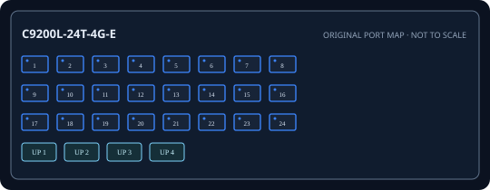

[ EXACT MODEL / SKU ]
Cisco Catalyst C9200L-24T-4G-E
Exact physical interfaces and their nominal link rates are documented below. Link rates are not measured application throughput.

IDENTIFICATION: Confirm model/SKU, hardware revision, power supply and firmware on the physical unit. No measured throughput is asserted.
Model-specific specifications and compatibility
| Exact model / SKU | Catalyst C9200L-24T-4G-E; manufacturer SKU C9200L-24T-4G-E. |
|---|---|
| Hardware revision | PID identifies the exact non-PoE model; the hardware revision is label-specific and is not encoded in this PID. Record chassis revision and serial from the unit. |
| Port count and rates | 24 x 10/100/1000BASE-T RJ-45 data ports; none provide PoE. Rates are per interface; aggregate full-duplex capacity is not a single-port throughput figure. |
| PoE standard and budget | None; the -24T data-only SKU has no PoE output. |
| Uplinks | Four fixed 1GbE SFP uplinks, separate from copper access ports; not SFP+. |
| Management and VLAN | Managed Cisco IOS XE switch; 802.1Q VLANs, 802.1X, QoS, ACL, STP and EtherChannel features depend on release/license. |
| Power input | Internal replaceable AC supply, input 100-240 V AC 50/60 Hz; installed supply PID depends on order configuration. |
| Power and compatibility | 1U rack system; verify IOS XE release, approved 1Gb SFP, PSU PID and revision label. |
| Measured performance | No independently measured packet-forwarding rate or latency is claimed. Test with documented firmware, packet sizes, port pairs, VLAN/QoS configuration and traffic direction if required. |
Installation and identification notes
- Record SKU, revision, PSU label, serial, firmware and port mapping before commissioning; similar model suffixes may use different power and firmware.
- Match copper cable category/length and SFP rate, wavelength, fiber type and reach to both ends of every link.
- For PoE models, confirm endpoint IEEE class negotiation and calculate demand against both per-port limits and aggregate budget.
- Preserve configuration backups and vendor documentation without publishing credentials or private network data.
Manufacturer datasheets and manuals
- Cisco Catalyst 9200 Series official data sheet (PDF)Official Cisco model/series support or specification source; confirm revision against the unit label.
- Cisco Catalyst 9200 Series product support and documentationOfficial Cisco model/series support or specification source; confirm revision against the unit label.
Use the exact label revision to choose current firmware, installation manuals and platform compatibility notes.